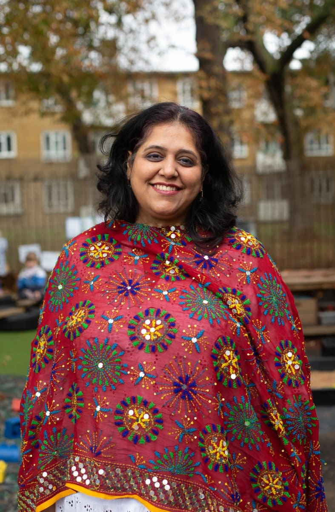

LEYF - LEYF Leaders
Photography, Social Media, PR.
With recent cuts to the government to the childcare system, we created a portrait project to celebrate nursery workers: a group who underpin London's workforce. The images were taken to celebrate this diverse and frequently overlooked group and shine a light on the need for adequate government support. Our campaign ran across the social enterprise's social media channels, smashing usual engagement rates by 400%.
